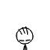

疏星问题之四
#1 疏星问题之四作者：茗弈宽容 发表时间：2011-12-15 17:00:26
请教大家15下哪好呢？
#2 Re:疏星问题之四作者：逆刃 发表时间：2011-12-15 18:28:31
这样的棋型肯定是黑棋不好下的，黑棋的力量全部包在里面，虽然我对这个局面不熟悉，但是我还是不建议这么下。可以考虑：
这样以守待攻的走法。
如果一定要说这个14之后15怎么选择比较好的话，因为考虑此局面能做到平衡已经不容易了，还是建议舍掉看似优势的棋型做交换成防守型。
如果走不好的话稍有不慎一旦白棋占据主动是非常可怕的事，我一直都感觉白棋的杀棋是非常强烈的，而黑棋则是不断的积累优势，同时还有优势的区域转移手段。
首先第一个看似很积极的15，实际上是必败，如下：
那么是选择单防呢还是通过先进攻再做防，这是个问题，一般来说单防是比较实用的，但是某些特殊情况，比如有些点，或者有些空间上的连接必须先通过进攻来占据和隔断的，还是先进攻比较好。
在这里不主张黑棋先活三或者继续做棋等进攻性手段，为什么呢，因为白棋已经很多棋在外围，黑棋没有必要再帮对手扩大版图。
如果15单防中间：
那么16也单防后，黑棋似乎更难选择，只有等着优势消耗掉，没有突围的机会；而且不能忽略的一点是，黑棋在右边的交换中必须在交换后能保持一个先手，在左边防一手，因为白棋左边不防一手的话能做出杀；而同时右边不能给白棋机会，这是比较难的地方。
综上所述，这时的黑棋需要做到的是，交换或者控制到白棋右下无杀，同时把优势过度到外围，争取要到上面和左边的空间，从而能在后盘很好的控制好左边和上边的棋力。
那么15在上边防活二或许是比较好的选择。这里需要注意的是，有的时候单防比较好，有的时候单防之后反而被对方控制，如果局部棋力太弱的话很可能就成了牺牲品，需要多看几步交换后的局面再决定。
如果对手选择下这个16，那么这个局面就比较好控制了。
另外几个非直接防守的16，相对比较好点，对应手举例如下，具体孰优孰劣还要看后面的走法了。
这时黑棋必须交换右边同时控制局面，注意白棋在L10点的进攻，必须破坏掉。
另外一个16，黑棋还是比较好应对的。只要保证白棋下面无杀就行了。
另外一个16，可能出现的走法：
个人所见，难免短浅，错漏之处，望多谅解。说得比较多，希望能有帮助。
［ 失落刀 于 2011-12-15 18:54:47 时奖励此帖[金币加 100 威望加1］
［ 虎哥 于 2011-12-16 11:31:41 时花20金币送鲜花一朵］
［ 茗弈宽容 于 2011-12-16 13:28:25 时花20金币送鲜花一朵］
［ 茗弈宽容 于 2011-12-16 13:28:27 时花20金币送鲜花一朵］
［ 茗弈宽容 于 2011-12-16 13:28:29 时花20金币送鲜花一朵］
#3 Re:疏星问题之四作者：自来水 发表时间：2011-12-15 20:44:32
赞同二楼第一图
#4 Re:疏星问题之四作者：弱惜 发表时间：2011-12-16 9:06:50
我是在一个月前对黑白双方纠缠局面才有初步的认识，谢谢小刀师父和逆刃老师，还有木有这方便的资料或者更详细的讲解，笨笨不太理解什么叫交换，还有什么时候应该牵制、对攻、单防。
［ 茗弈宽容 于 2011-12-16 13:28:49 时花20金币送鲜花一朵］
［ 茗弈宽容 于 2011-12-16 13:29:31 时花20金币送鲜花一朵］
［ 茗弈宽容 于 2011-12-16 13:29:33 时花20金币送鲜花一朵］
#5 Re:疏星问题之四作者：自来水 发表时间：2011-12-16 10:04:40
 我说说我的理解：
我说说我的理解：
 牵制：能通过做棋扩大己方优势，遏制对方势力即为牵制，对局的多数时间双方都在做这个工作。牵制可以是是争夺一个先手，也可以是争夺若干个点，线路和空间。所以我觉得牵制是无时不刻的，纯粹的进攻往往等到最后，纯粹的防守往往是无奈之举动。
牵制：能通过做棋扩大己方优势，遏制对方势力即为牵制，对局的多数时间双方都在做这个工作。牵制可以是是争夺一个先手，也可以是争夺若干个点，线路和空间。所以我觉得牵制是无时不刻的，纯粹的进攻往往等到最后，纯粹的防守往往是无奈之举动。
 对攻：所谓对攻，就是双方都有攻势时，一开始防守的一方选择以攻代守，化被动为主动。这种情况往往发生在黑白势力各取一边，变化比较激烈的情况。对攻结果基本上是“不成功，便成仁”，所以不能盲目，也不能等觉得防不住对方时再想到作垂死挣扎。对攻一定要慎重，我个人不太喜欢对攻。
对攻：所谓对攻，就是双方都有攻势时，一开始防守的一方选择以攻代守，化被动为主动。这种情况往往发生在黑白势力各取一边，变化比较激烈的情况。对攻结果基本上是“不成功，便成仁”，所以不能盲目，也不能等觉得防不住对方时再想到作垂死挣扎。对攻一定要慎重，我个人不太喜欢对攻。
单防：单防其实是比较局部的技巧。多数情况就是对方优势较大，牵制不住而对攻又毫无胜算，那么走一步纯粹的防守。单防的子力多数时候有去无回的，所以己方的废子一定要成为对方攻击的最大障碍，也就是所谓“手筋”。单防效果好的话泼对方一盆冷水，效果不好自己被猥琐死。
交换这个概念我就没什么概念了 ，貌似是交换先后手的意思，交换的结果就是变化减少，有什么用我也不知道。
，貌似是交换先后手的意思，交换的结果就是变化减少，有什么用我也不知道。
［ 弱惜 于 2011-12-16 10:51:32 时奖励此帖[金币加 100 威望加1］
［ 茗弈宽容 于 2011-12-16 13:29:12 时花20金币送鲜花一朵］
［ 茗弈宽容 于 2011-12-16 13:29:14 时花20金币送鲜花一朵］
［ 茗弈宽容 于 2011-12-16 13:29:16 时花20金币送鲜花一朵］
［ 蹲街丶式寂寞 于 2011-12-17 16:34:18 时花20金币送鲜花一朵］
#6 Re:疏星问题之四作者：逆刃 发表时间：2011-12-16 13:07:10
弱惜问的这个问题其实很大，这就是五子棋的中盘博弈之道了，一言两语说不清哦，下次好好总结下。［ 弱惜 于 2011-12-16 15:51:27 时花20金币送鲜花一朵］
#7 Re:疏星问题之四作者：茗弈宽容 发表时间：2011-12-16 13:28:12
谢谢刃刃精彩的分析和讲解，受益匪浅。也谢谢自来水妹妹对定义的理解，让我们学习。 惜儿可多和婷儿下下棋，学习她的大局观。
惜儿可多和婷儿下下棋，学习她的大局观。
［ 弱惜 于 2011-12-16 15:52:42 时花20金币送鲜花一朵］
［ 自来水 于 2011-12-16 16:49:37 时花50金币砸了你一个臭鸡蛋］
#8 Re:疏星问题之四作者：自来水 发表时间：2011-12-16 16:50:34
 抗议之
抗议之#9 Re:疏星问题之四作者：茗弈宽容 发表时间：2011-12-17 12:07:13
谁砸我鸡蛋啦？！！！！抗议无效。。。。。